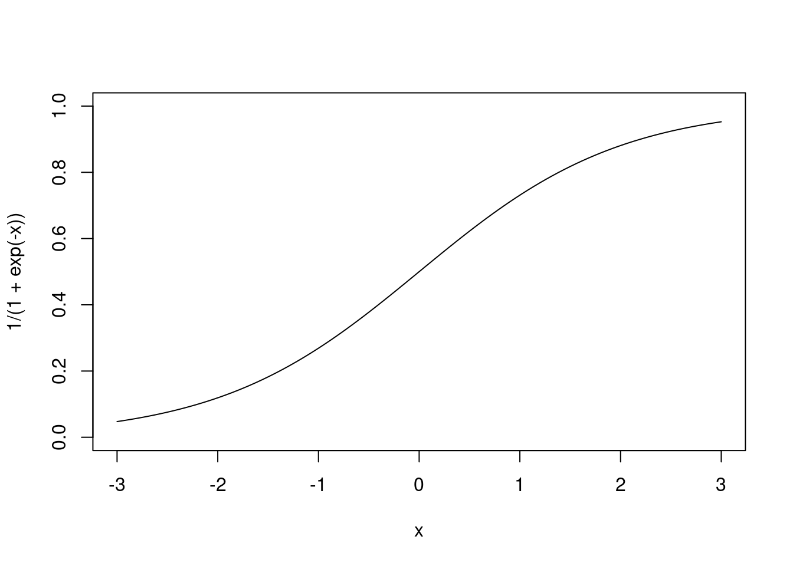
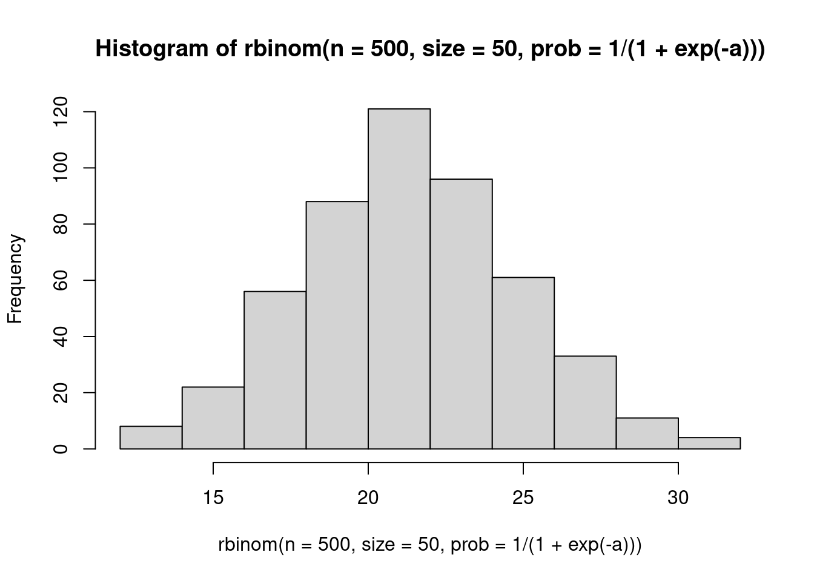

library(palmerpenguins)
library(tidyverse)
# library(cmdstanr)
suppressPackageStartupMessages(library(rstan))
rstan_options("auto_write" = TRUE)
options(mc.cores = parallel::detectCores())
library(tidybayes)Extra course content
A collection of topics that didn’t fit in the course schedule but are still useful and interesting!
Load packages and data
Simulation workout!
- make a histogram of 500 numbers from a distribution!
- normal
- poisson
- EXTRA try a new one, like beta, gamma, lognormal
- make a histogram of poisson observations, using the classic
log()link function.
\[ \begin{align} y &\sim \text{Poisson}(e^a) \\ a &\sim \text{Normal}(??, ??) \end{align} \]
TIP
## sample poisson variables like this:
rpois(500, exp(3)) [1] 24 14 30 23 22 23 23 10 12 16 15 22 19 24 25 20 16 27 25 18 19 23 14 24 34
[26] 15 24 29 20 25 21 15 19 30 26 20 21 19 26 17 20 17 20 21 27 14 21 23 15 24
[51] 28 25 15 14 15 20 29 11 23 24 12 19 22 17 23 12 13 23 25 13 29 11 25 23 23
[76] 16 17 21 24 18 18 17 17 15 17 21 18 16 15 21 17 16 15 24 26 19 16 18 31 23
[101] 18 19 20 17 15 19 20 19 15 24 19 21 24 14 17 17 25 19 16 17 26 12 17 22 20
[126] 16 27 16 17 13 16 11 15 16 24 18 13 19 20 22 25 21 23 23 28 19 18 21 12 25
[151] 19 17 17 17 19 21 22 28 13 24 11 19 19 22 22 22 27 21 22 11 26 22 21 21 21
[176] 13 21 20 21 22 13 24 17 22 19 24 13 27 30 26 20 23 18 17 23 10 23 20 19 28
[201] 32 17 17 18 21 24 16 15 26 24 15 16 21 29 23 28 16 18 16 12 34 19 21 24 19
[226] 24 26 13 28 22 17 20 22 16 24 28 17 18 15 25 23 21 15 21 22 29 20 19 18 28
[251] 21 15 21 30 30 17 28 21 16 19 22 16 21 16 22 15 15 26 25 27 23 28 20 16 14
[276] 19 27 18 23 22 22 16 22 20 7 18 23 20 23 17 18 18 18 19 23 16 22 22 23 20
[301] 22 19 16 20 20 22 21 24 23 19 20 24 20 29 20 19 24 29 15 14 21 20 29 22 17
[326] 13 14 20 22 19 24 18 15 20 25 24 23 23 21 27 20 19 19 19 22 22 24 21 24 15
[351] 21 16 26 18 21 23 21 19 16 24 25 15 18 22 20 20 28 18 26 13 21 17 18 26 23
[376] 19 28 16 21 23 18 23 17 19 23 31 16 22 22 19 23 23 23 20 25 20 25 16 17 15
[401] 22 23 23 21 14 26 15 19 23 16 19 28 31 24 19 21 17 19 22 12 22 19 24 23 18
[426] 22 23 22 26 29 29 19 26 18 25 19 26 24 20 14 15 15 25 24 21 22 20 17 22 21
[451] 20 16 21 21 20 26 19 24 21 26 17 23 15 17 17 14 14 18 21 12 28 13 10 18 16
[476] 22 27 21 16 24 20 25 15 15 36 20 18 20 21 20 14 23 15 18 22 22 13 21 16 18- make a histogram of Binomial observations, using the inverse logit link function
\[ \begin{align} y &\sim \text{Binomial}\left(\frac{1}{1+e^{-a}}, N \right) \\ a &\sim \text{Normal}(??, ??) \end{align} \]
Here’s a plot of the link function, to help you think about it:
curve(1 / (1 + exp(-x)), xlim = c(-3, 3), ylim = c(0, 1))
TIP
a <- rnorm(1, mean = 0, 1)
hist(rbinom(n = 500, size = 50, prob = 1 / (1 + exp(-a))))